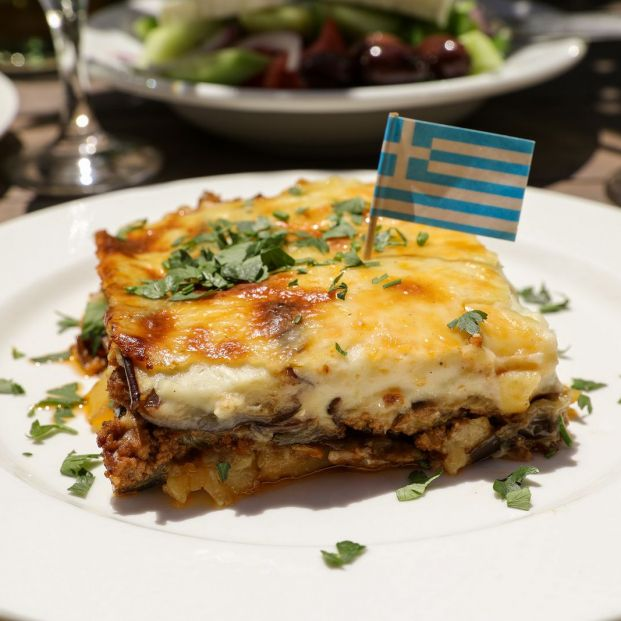

Comidas del Mediterraneo
Musaka Griega


La musaka es un pastel de berenjenas de origen árabe, aunque realmente se considera como una receta griega. Prepararla es simple es muy parecida a la lasaña por las capas, pero no lleva pasta, sino que estos ‘pisos’ son de berenjena, papas y carne principalmente. La receta original de musaka griega no lleva carne picada, sino cordero. Simplemente con un rico tomate, una bechamel espesa y quesito para gratinar, nos encontramos con un plato de primera categoría, famoso internacionalmente y reconocido por todos.